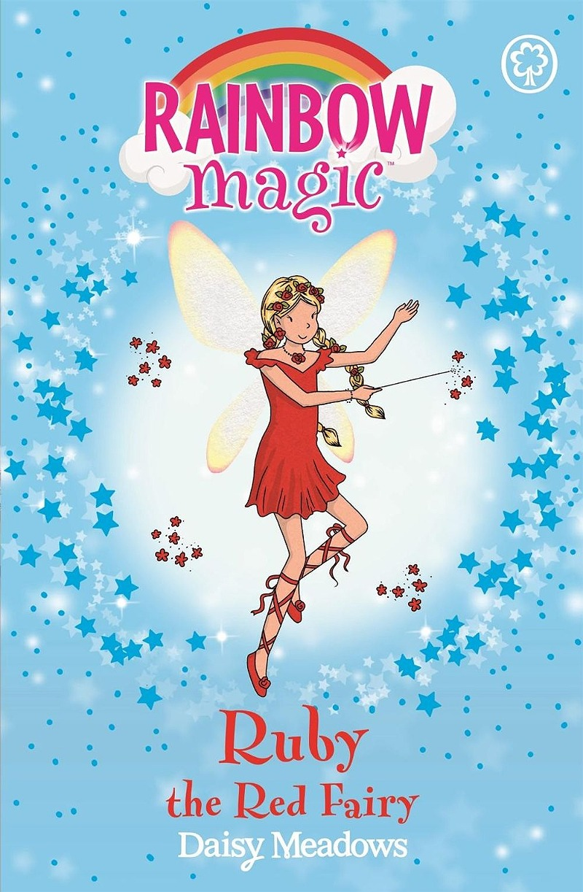

The Rainbow Magic books are a long running series of children's books that each star a fairy associated with a colour, season, plant, instrument etc. The first book, Ruby the Red Fairy, was released in 2003 and had me hooked as an early reader. The books are written by various authors under the pseydonym Daisy Meadows, and illustrated by Georgie Ripper. These books were fun and there are so many of them, and they remind me of the Cicely Mary Baker illustrations of themed fairy children.
I am really fascinated by children's media like this (or My Little Pony for example) that basically rehashes the same story, style and imagery by with a different colour or season theme. This kind of formulaic storytelling, I would argue, is one of the ways that we teach children to understand narratives and make stories - just like Joseph Campbell explores in The Hero with a Thousand Faces. I like the idea of having a single story in multiple forms, or one person playing lots of characters and only differentiated by costumes.
click here to learn more

make space!